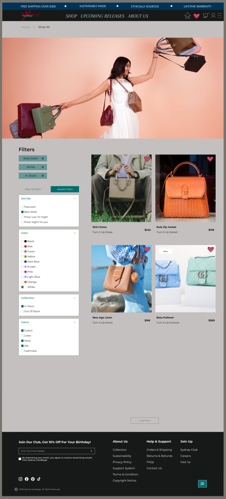
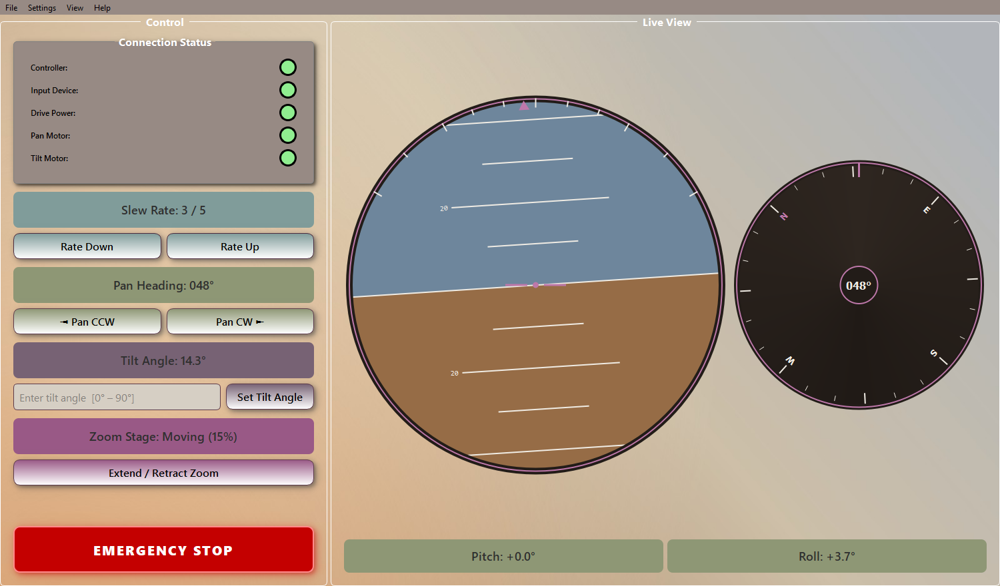
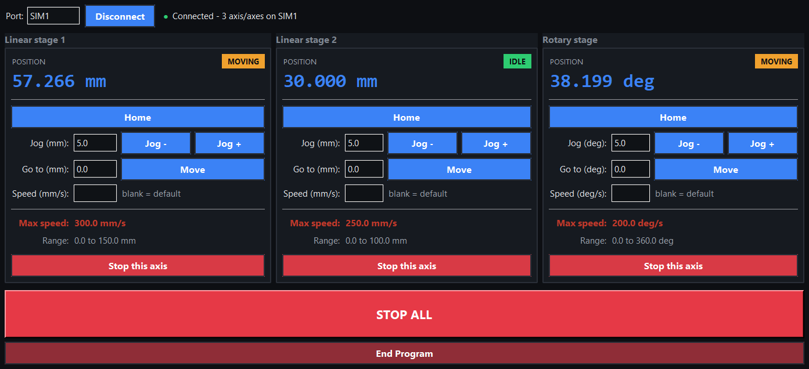
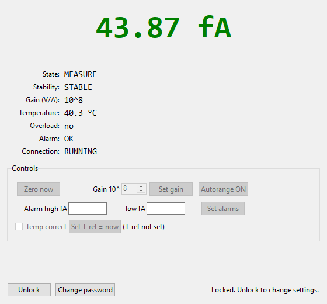
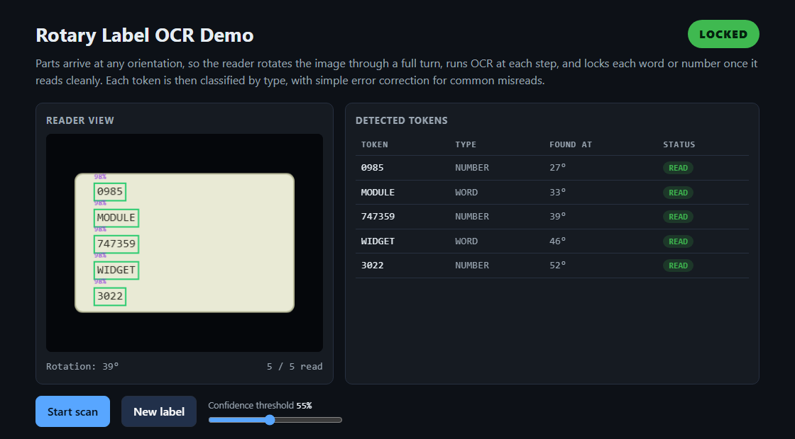

I'm Bella.
Computer Engineer & User Interface Developer
Hello! I am a computer engineer and user interface developer with a passion for turning complex systems into clean, intuitive interfaces. My work spans robotics, autonomous systems, and machine learning. As a hobby, I have been self-teaching web development and UX/UI design.
About
Hi, I'm Bella.
I am a Computer Engineer and User Interface Developer at Savannah River National Laboratory, building interfaces for robots, autonomous systems, and scientific instruments. After working across mechanical systems, instruments, and robotics, I developed a real passion for interface design. With a background in art and design already in the mix, it became a natural place where everything converged.
As a hobby, I have been self-teaching web development and UX/UI design, and it opened up something I wasn't expecting. Coming from a background in hardware, embedded systems, and ML, I always understood how things worked underneath, but building for the frontend is where the experience actually lives. There's something exciting about having control over how something feels to use, not just whether it functions. B.S. in ECE from Ohio State, and still finding new corners of this field worth exploring.
Outside of work, I run a small custom apparel business with my husband, cook almost every night, and travel whenever I can. I like things that take real time to get good at. That might be the thread connecting most of what I do.
Experience
Equipment Development Engineer
Savannah River National Laboratory · Aiken, SC
Building operator interfaces for robotics and autonomous systems, deploying ML pipelines for real-time anomaly detection and OCR, and working across AGVs, PLCs, and precision motion control.
Hardware Engineering Intern
EndoSec LLC · Remote
Implemented cryptographic algorithms in VHDL, researched SHA-3 and Keccak implementations, and produced system architecture documentation.
B.S. Electrical and Computer Engineering
The Ohio State University · Columbus, OH
Focus in computer engineering: digital logic, FPGA implementation, and software development in C, VHDL, and Python.
Outside of Work
Selected Work
Projects
Click + on any project image for a brief description, or select the project to view the full breakdown.
Figma Self-Taught Project

Taught myself Figma by designing a full multi-page app for a small business, building well beyond the course foundation.
Pan-Tilt Gimbal Control Console

A PyQt6 operator console for a two axis camera platform, with hand drawn attitude and heading instruments, pan, tilt, and zoom controls, connection monitoring, and a latching E-stop. It's a simulated stand-in for professional work I can't show publicly, built around a neutral example and wired to a software simulator.
Zaber Motion Stage Controller

A tkinter control panel for Zaber linear and rotary stages, with per axis Home, Jog, Go-to, live position readouts, status pills, and a STOP ALL. It's a simulated stand-in for professional work I can't show publicly, wired to a software simulator.
Picoammeter Readout

A tkinter operator panel for a low-current measurement setup, with a large live current readout, zeroing, gain, autorange, alarms, and a password gate. It's a simulated stand-in for professional work I can't show publicly, wired to a software simulator.
MSP430 Telemetry Dashboard

A hardware-to-browser telemetry system: C firmware on an MSP430FR6989 streams live temperature and supply-voltage readings over UART, a Python service validates and stores them, and a web dashboard renders them with a hand-rolled Canvas chart, alarm logic, and event log.
Mass Spectrometer Interface
Led frontend development and contributed to backend integration for a mass spectrometer interface, visualizing live spectral data and enabling precise instrument control for scientific measurement workflows.
OCR System

An OCR pipeline for industrial label inspection at a national laboratory. PyTesseract (chosen over EasyOCR in testing) with custom logic for 360° rotation scanning, error correction, and multi-step validation.
Real-Time Anomaly Detection
Engineered a real-time anomaly detection and OCR pipeline on NVIDIA Jetson Orin with CUDA acceleration. Achieved 95% detection accuracy using PyTorch, Anomalib, and PyTesseract.
IR Facial Recognition Interface
Senior capstone project and my first real introduction to seeing frontend, backend, and UX/UI design come together. Built as part of a team, this project sparked a genuine passion for full stack development.
SmartMotor Mixing Device
Programmed a Moog Animatics SmartMotor to drive a mixing device in torque mode, using torque ramp profiles for smooth, repeatable cycles without mechanical shock.
Calorimeter Heating System
Built the frontend interface and contributed to backend logic for a calorimeter heating system, providing real-time temperature monitoring and precise instrument control for laboratory use.
This Site!
My little corner of the internet and a living record of what I'm learning. Built from scratch as I work through a full stack development course covering HTML, CSS, JavaScript, Bootstrap, SQL, React, and Node.js. The site grows as I do!
My Skills
Web Development
Machine Learning & Computer Vision
Robotics & Automation